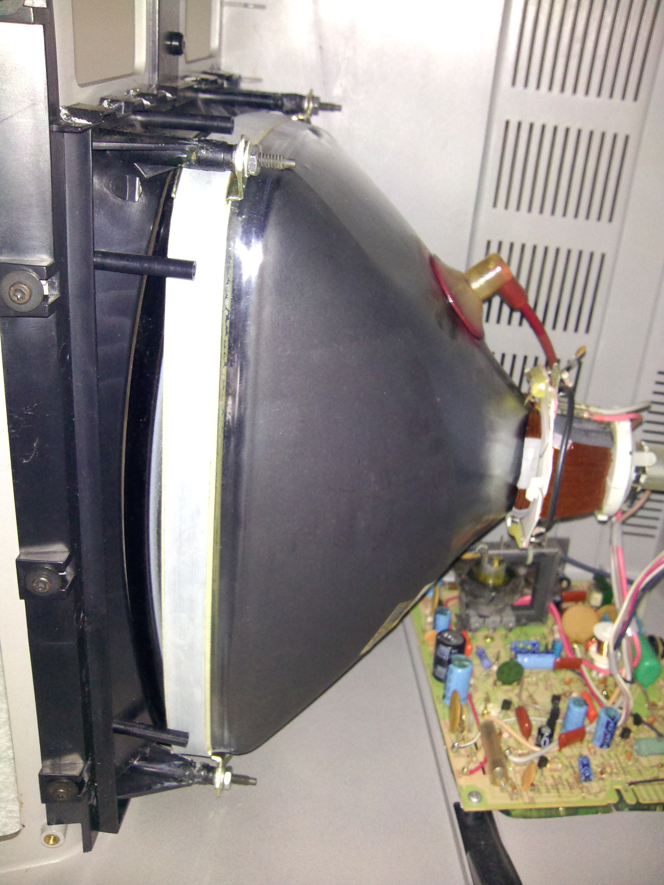
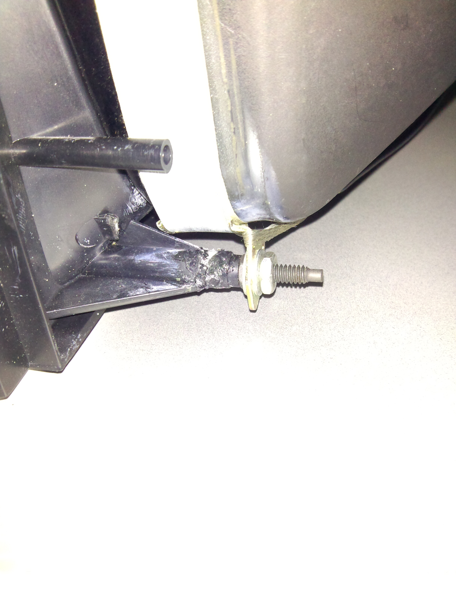

Even though the Model III is a tough bit of gear, its Achilles' heel must be the CRT mounts. They tend to break just above the support fins, especially if transported incorrectly. Also the fact that the plastic gets brittle over time doesn't help either.
I repaired them using super glue. Hopefully it will hold.
Closeup
